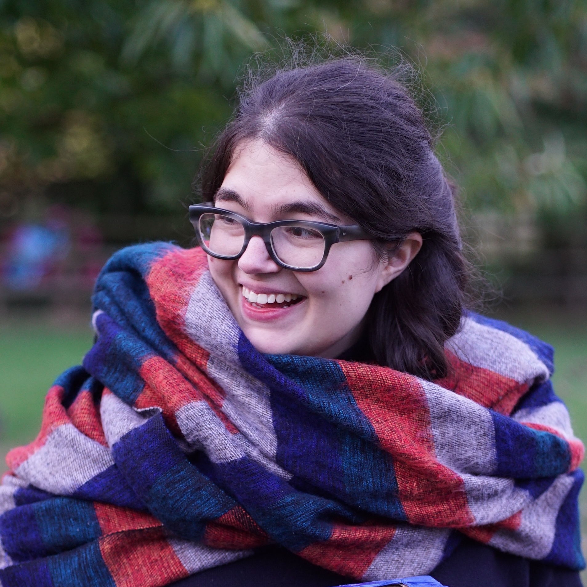
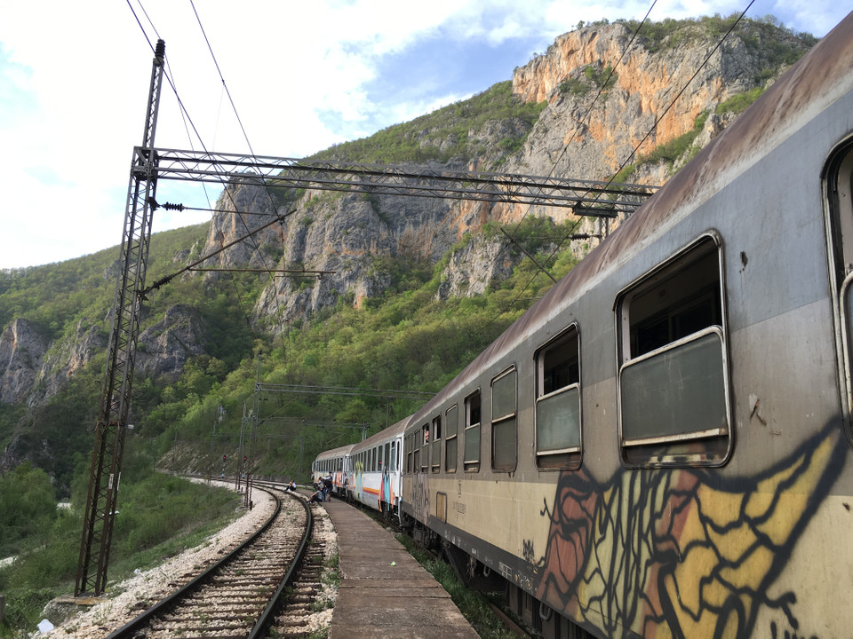

About
- CEO and co-founder of Touco, where we help carers and those they care for manage money.
- Fintech nerd with 10 years of experience working across early stage startups.
- Used to work at Monzo, MarketInvoice (now MarketFinance), Funding Options and Zopa.
- Advocate for so-called 'vulnerable customers', particularly those affected by impairments such as mental health difficulties, dementia or learning difficulties.

About Touco
I'm the CEO and co-founder of a fintech startup called Touco. We help people manage their money better together with someone that they trust, typically a carer.
Touco (formerly called Toucan) has been around since March 2018, when I won an Open Banking hackathon with an idea about how to help people with long term mental health difficulties access support around managing their money from a family member or carer.
I'd experienced mental health problems myself, and having worked with the Money and Mental Health Policy Institute (MMHPI) during my time at Monzo, I knew that this was a huge and growing problem.
For the first year it was just me on my own, working up prototypes and talking to experts about how we might build a product that helps vulnerable people manage their money better.
At the beginning of 2019, Touco was given the opportunity to be a part of a programme called Open Banking for Good, supported by Nationwide Building Society. As part of the programme we received funding and support from charity partners, including MMHPI.
We were able to build out the team, build the first version of our mobile app, and run a pilot alongside Northumbria University, all in our first six months. At the end of that project I published a report on our findings, 'Let's talk about money'.
Since then we've been chosen as finalists as part of Nesta's Open Up 2020 Challenge, gone through the Barclays Techstars 2020 accelerator, released a new version of our app and announced that we're building a Care Card with support from Innovate UK.

Speaking as a finalist at the Innovating for Ageing awards 2019
To date, Touco has been featured in Forbes, The Financial Times, Which? and The Independent.
“A new app that gives parents, friends and carers oversight on loved ones’ finances without having to hand over direct control” – Which?
Before Touco
You can check LinkedIn or read my CV for more on my skills and experience.
A quick summary would be that I've worked in fintech for the best part of a decade, mainly in early stage startups and scale-ups including Monzo, MarketInvoice (now MarketFinance), Funding Options and Zopa.
MarketFinance was where I spent the most time, joining as employee number twelve and the first person in marketing, and leaving as Head of Marketing with six people in my team.
Although I've mainly been in marketing and product roles, for a short time in 2017, I also worked as a software engineer.
Before getting into fintech I was interested in becoming a writer and musician, having studied English Literature at university. But when I fell into tech, I loved it. The huge variety of work is what keeps me on my toes, and over the last ten years I've seen how fintechs have really managed to change financial services for the better. It's great to feel part of that movement.
Other stuff
Believe it or not, I'm more than a fintech nerd! Among other things:
- I care deeply about diversity and inclusion.
- I like baking, and make a mean chocolate chip cookie.
- I'm a part of an amazing group of lifelong learners called Enrol Yourself.
- I harbour a secret desire to go back to university to study economics.
- I love going on long train trips (longest so far was Chicago to San Francisco in 4 days!).

Train trip from Belgrade in Serbia to Bar in Montenegro, 2016.